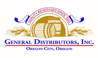
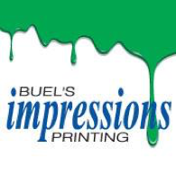

Our program would not be able to fill requests for Christmas stockings without support from our longtime major donors and businesses who support us in many ways.
THANK YOU TO OUR MAJOR SPONSORS FOR THEIR CONTINUED YEARS OF SUPPORT
Many community businesses throughout Clackamas County (too many to mention) help with fundraising, donate time, cash and items for the stockings, or act as drop-off sites from October through December (see Drop-Off Sites). Without everyone’s support, FILL A STOCKING, FILL A HEART, which is run solely by volunteers, would not be able to continue giving over 3500 stockings each year. Together, WE help bring a smile and some joy to those less fortunate.